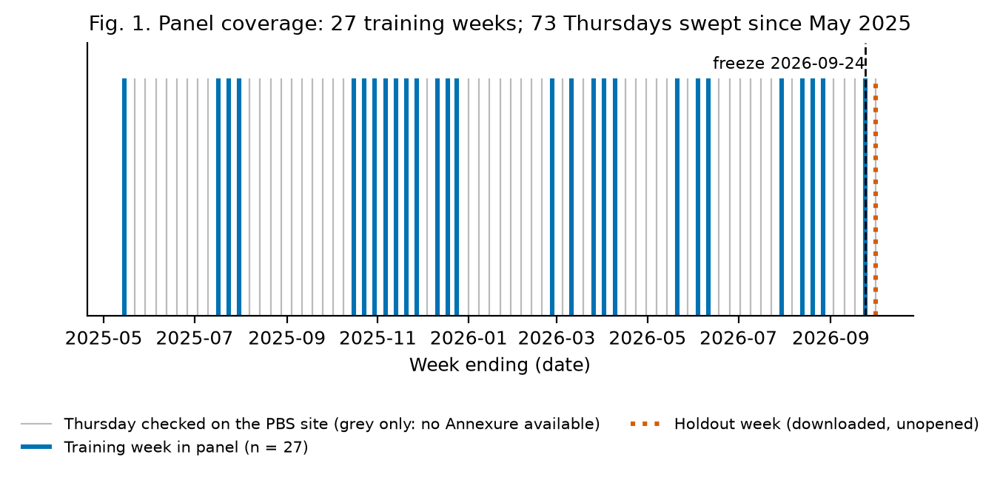
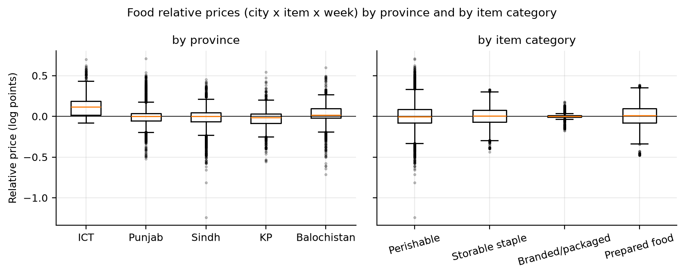
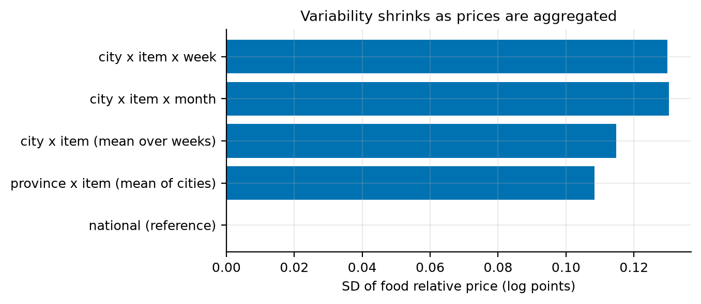
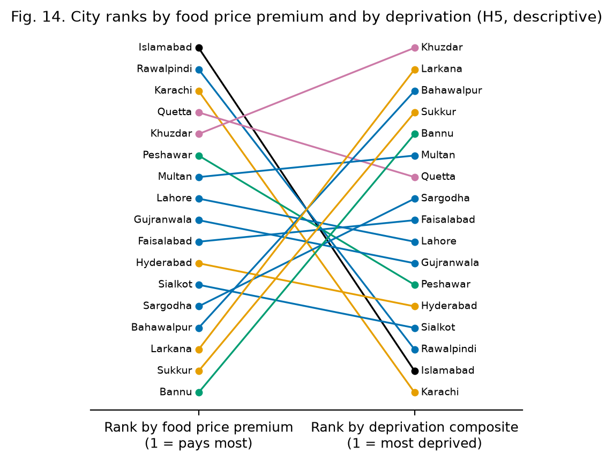
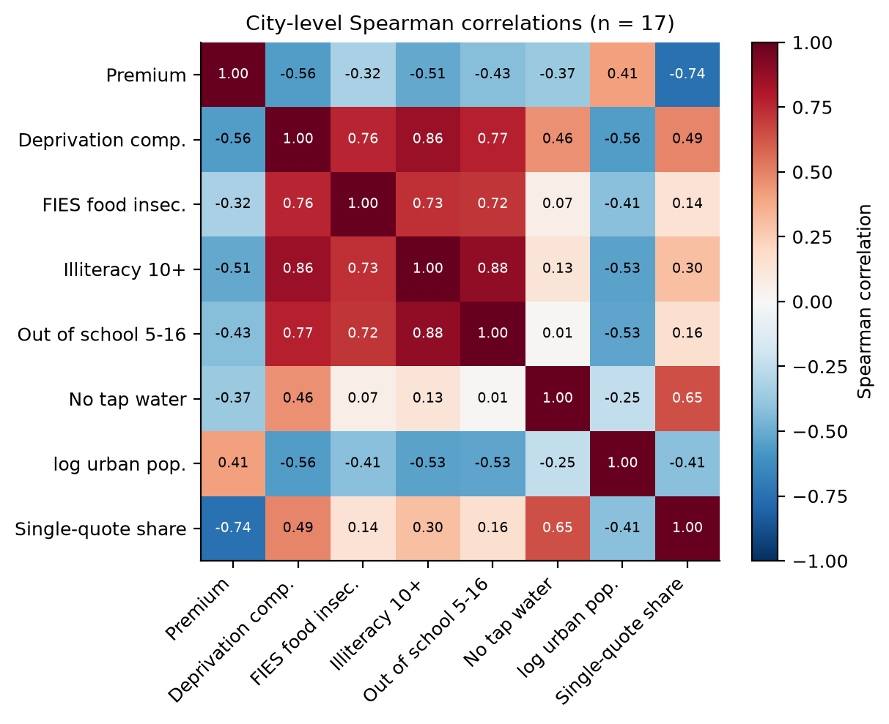
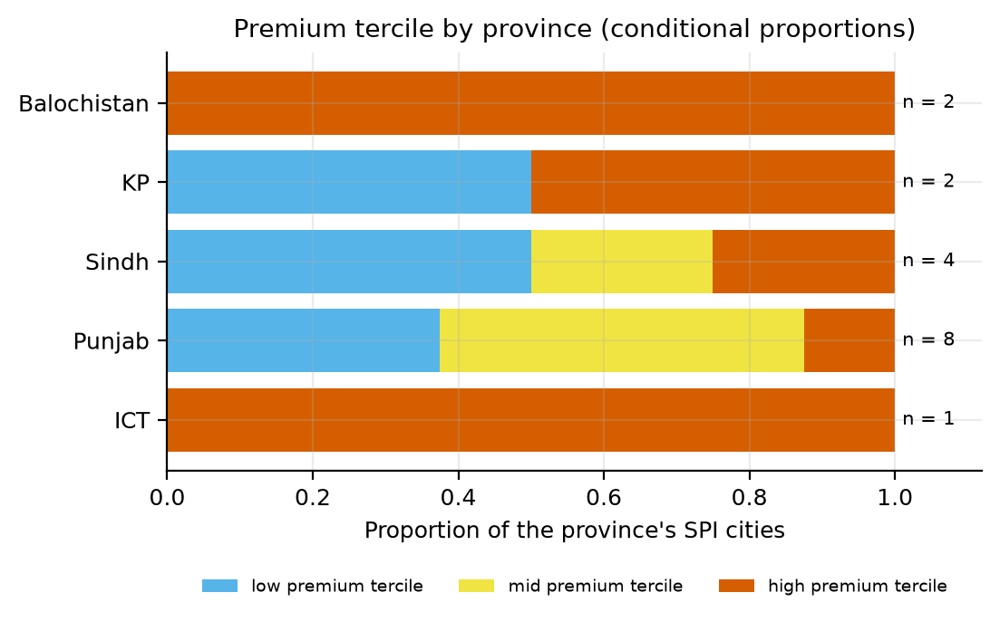
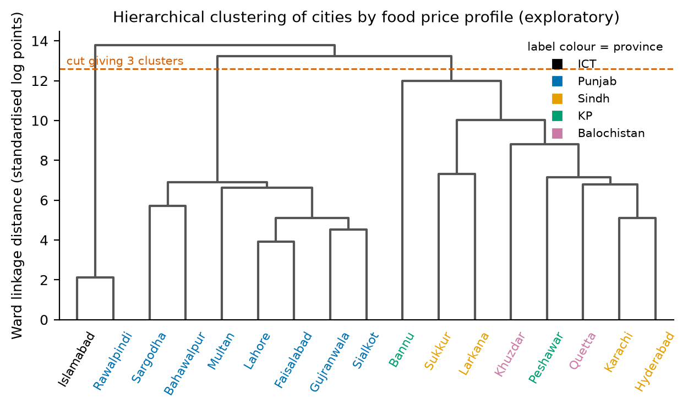
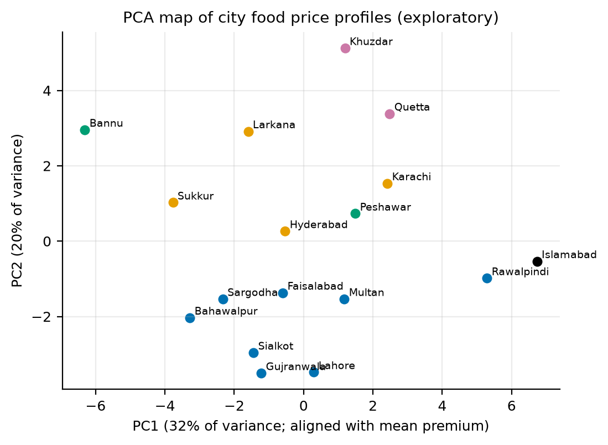
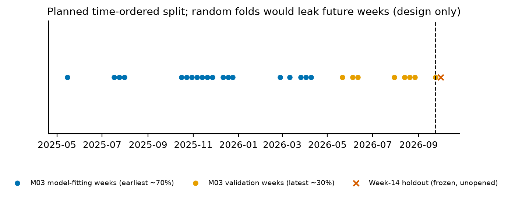

Milestone 01 reported a 7-city panel. That was a parsing error. Appendix-A of the PBS Annexure is three tables stacked in one sheet,
and the earlier script stopped after the first. The panel actually covers all 17 SPI cities
(8 Punjab, 4 Sindh, 2 Khyber Pakhtunkhwa,
2 Balochistan, plus Islamabad), so the "Punjab and Islamabad only" limitation is retired.
The earlier figure of 16,380 rows, explained then as records times MIN/AVG/MAX, was a coincidence of reading three blocks under one set of
city names. The faulty files are kept as an audit trail and a dated correction note is in the repository
(reports/CORRECTION_2026-10-04_appendix_a_17_cities.md). Following the instructor's feedback that a price-only study is too
narrow, we now merge three external sources, each with one job (Table 1). The reference price is the geometric mean across quoting cities,
which is PBS's own definition (§2.1). Hypothesis H5 (burden versus price) is new and is now testable with n = 17.
Research question. Beneath the single national weekly SPI figure, do persistent city-level food price differences exist, are the cities paying most the ones least able to absorb it, and is the published city detail enough to detect localised price stress? SDGs: primary SDG 2 (Target 2.1 access to food; Target 2.c functioning food markets and timely market information), secondary SDG 10 (reduced inequalities). Division of perspectives: both members are computer scientists, so we split roles. One owns acquisition, parsing and provenance. The other owns statistical framing, representation, ethics and policy interpretation.
Table 1. Data inventory. Observational unit: one city x item x week. Master dataset: 23,409 rows x 46 columns; 17 cities, 51 items (32 food), 27 weeks.
| Source | Role | Vintage / coverage | Access | Size used |
|---|---|---|---|---|
| PBS weekly SPI Annexure, Appendix-A | Prices: MIN/AVG/MAX by city and item (the panel) | 27 weeks, 2025-05-15 to 2026-09-24 | xlsx from pbs.gov.pk release pages | 23,409 rows (867/week) |
| PSLM District Level Survey 2019-20 | Deprivation (burden denominator): FIES, literacy, schooling, water | 2019-20 | PDF report tables, text extraction | 22 districts |
| Pakistan Digital Census 2023, Table 1 | Population: total and urban, for size and fairness strata | 2023 | xlsx by province | 23 districts |
| CPI (Urban) Food & non-alcoholic beverages | Deflator only (not a regressor) | monthly 2025-05 to 2026-09 | PDF + Monthly Review docx | 13 panel months |
Discovery. PBS publishes each weekly release on a page of the form
/weekly-sensitive-price-indicator-spi-for-the-week-ended-on-DD-MM-YYYY/. That page links the Annexure workbook. We swept
73 Thursdays from 2025-05-15 onward, trying the Thursday, Wednesday and Friday page for each
(197 requests, rate-limited, every attempt logged in data/raw/pbs_backfill_manifest.csv with URL,
SHA-256 and time). Release pages exist for only 12 of those weeks. Direct file URLs for older weeks return 404
under every naming variant we tried, and site search lists only recent releases. The panel therefore holds 27 weeks:
27 distinct workbooks, after dropping 12 byte-identical duplicates by hash, keeping the earlier repository
copy each time. Every re-downloaded file was byte-identical to its earlier copy, which independently confirms provenance. We do not
describe the archive as complete. Earlier routes that failed or were rejected are documented in the repository audits: the Punjab AMIS wholesale portal
(HTTPS fails TLS negotiation; HTTP pages load but historical queries were not reproducible and no commodity or market match could be
verified), an older single-pattern URL sweep that tried Thursdays only, and PDF annexures (superseded by xlsx).
The week of 2026-10-01 falls after the freeze (2026-09-24). It was saved to an append-only holdout folder,
hashed and never parsed.
Validation. The parser finds every row whose second cell is DESCRIPTION and reads the city labels Name (NN)
on the row above. Columns under any other header are not cities. It reads the week from the PRICES ON dd-mm-yyyy cell and checks
it against the file name. Assertions fail loudly on every week: 3 blocks, 17 cities, 51 items, 867 rows, no duplicate key,
MIN ≤ AVG ≤ MAX where positive, and zeros only as all-zero triples. Against PBS's own national columns, the cross-city minimum and maximum
equal PBS's National MIN and MAX in 1,377 of 1,377 item-weeks. The geometric
mean of the quoting cities' averages matches PBS's National AVG within 0.1% in 1,377 of 1,377
(worst case 0.046%). The arithmetic mean misses by a median of 0.42%
and the median by 1.07%. The geometric mean is therefore PBS's reference price and ours. Release
dates are 25 Thursdays and 2 Wednesdays. There are 15 consecutive pairs
(14 at 7 days, 1 at 6). Other gaps run from 13 to 77 days (Fig. 1).

The raw sheet (179 rows x 25 columns) breaks all three tidy-data rules. The variable city is stored in
headers. One observation is spread over MIN, AVG and MAX cells under a merged city header. Three tables share one sheet. We melt it to one row
per city, item and week (867 rows per week), keeping PBS's serial as item_id and its city code as
city_code, both nominal. The national summary columns of block 3 go to a separate reference table and are never panel rows.
Table 2 lists every cleaning action. Nothing is deleted.
Table 2. Cleaning log (counts written by the pipeline).
| operation | rows_or_files | note |
|---|---|---|
| City labels with hyphen or line break repaired | 0 | Repair rule in parser; none needed in the 27 training files |
| Zero MIN/AVG/MAX triples set to missing | 83 | Structural non-quotes; PBS excludes them from its national mean |
| Week dates read from 'PRICES ON' text | 27 | All match the date in the file name |
| Item label wording changes mapped to first label | 17 | Item 42 renamed in 2026-09-24 release, unit and price unchanged |
| Duplicate workbooks dropped (identical sha256) | 12 | Earlier repo copy kept; re-downloads byte-identical |
| Rows deleted | 0 | Nothing deleted; missing values are flagged, not dropped |
Of the options taught (remove, impute from internal data, impute from external data, constant), none is applied to prices. There are 83 structural non-quotes (0.35% of rows), where PBS prints 0/0/0: rice IRRI-6/9 in Gujranwala, Lahore and Sialkot in every week, and gas charges in Khuzdar in two weeks. PBS itself leaves these cities out of its national mean, so imputing would invent a market price the source does not record. Weekly changes across non-consecutive gaps (10,367 rows, 44.3%) stay missing, because interpolation would manufacture changes nobody observed. Missing weeks are a coverage gap. The trade-off is statistical convenience against selection bias: complete-case analysis is honest here only because the missingness is structural and documented (Table 3; per-column counts are in the notebook and codebook).
Table 3. The three kinds of missingness and the choice made for each.
| kind | rows | choice | reason |
|---|---|---|---|
| Structural non-quote (PBS printed 0/0/0) | 83.000 | set to missing, flag, do not impute | Imputing invents a market price PBS does not record; PBS itself excludes these cities from its national mean |
| Weekly change across a non-consecutive gap | 10,367.000 | leave missing | Interpolation would manufacture week-to-week changes nobody observed |
| Weeks absent from the PBS site | – | treat as a coverage gap | No source to impute from; stated as a limitation, not filled |
Log price. Prices behave multiplicatively, so a 10% premium means the same thing on salt and on a 20 kg flour bag. Pooled raw PKR
across items is not a meaningful distribution: it mixes units, with skewness 2.13. Within an item, the median
skewness falls from 0.216 on raw prices to 0.024 on log prices. All
cross-city comparisons use the relative price rel_price = log(price / national geometric mean). By construction it sums to zero across
quoting cities in each item-week, which is exactly the sum-to-zero premium in H1. Redundancy: log MIN and log AVG correlate at
0.998, so we keep AVG plus the within-city range. Provenance columns are kept for audit and excluded from
analysis. Normalisation: min-max scaling (0 to 1, higher = more deprived) for the deprivation indicators; z-scores of price within
item and week. Decimal scaling divides by a power of ten that differs by item (10^4 for flour), so it
does not make items comparable. Scaling matters because the distance-based methods in §3.7 would otherwise be dominated by large-valued
features. All constants come from the training panel. Encoding: 0/1 dummies for province and item category, and sum-to-zero (deviation)
coding for cities, so each city coefficient is a premium relative to the average city. Splitting: week_end is split into
year, month and ISO week (13 calendar months). Discretisation: equal-width bins collapse on population because
of Karachi (Table 4), so the strata used for H4 and the contingency tables are equal-frequency terciles.
Table 4. Equal-width against equal-frequency binning (cities per bin).
| variable (17 cities) | method | low | mid | high |
|---|---|---|---|---|
| pop_urban | equal-width | 15 | 0 | 2 |
| pop_urban | equal-frequency (terciles) | 6 | 5 | 6 |
| deprivation_composite | equal-width | 9 | 6 | 2 |
| deprivation_composite | equal-frequency (terciles) | 6 | 5 | 6 |
Stacking joins the three blocks and the 27 weeks. Merging adds the item classification (on item_id), the city
attributes (on city) and the CPI (on the calendar month of week_end). Each merge is many-to-one, and the row count is
asserted unchanged (23,409; Table 5). Crosswalk decisions (Appendix Table A3): Karachi is one SPI
market but seven Census 2023 districts and six PSLM 2019-20 districts. Keamari was split from Karachi West after the survey, so PSLM values are
population-weighted with Keamari added to West's weight. Islamabad and Rawalpindi form one contiguous market but are kept as two
administrative units, each with its own district values; §3.7 shows they are each other's nearest neighbour in price space. PSLM has no urban
sample for Khuzdar, and FIES is published only for district totals, so all four indicators use district totals for comparability. The
urban values are kept as a sensitivity column. The four deprivation indicators, all oriented so that higher means more deprived, are
moderate-or-severe food insecurity (FIES, SDG 2.1.2; 7.9% in Islamabad
to 29.3% in Khuzdar), illiteracy at age 10+, children 5-16 out of
school, and households without tap water. They are min-max scaled and averaged into a transparent composite. The water indicator partly reflects
infrastructure type (much of urban Punjab uses motor pumps), so a composite without it is reported as a sensitivity check. These are
district deprivation measures from 2019-20, not city income: PBS publishes income only by province. CPI: urban food CPI rose
14.0% from 2025-05 to 2026-09. It is used only to express real price
levels. H1, H2 and H5 compare cities within the same week, so no national deflator can change them, and a nationally uniform series would be
collinear with week effects as a regressor.
Table 5. Stacking and merging steps, keys, cardinality and row counts.
| operation | source | key | cardinality | rows_after |
|---|---|---|---|---|
| stack | 3 Appendix-A blocks per workbook | same 51 item rows | rows: 7+7+3 cities x 51 = 867 per week | 867 |
| stack | 27 weekly workbooks | week_end | 867 x 27 | 23409 |
| merge | item_mapping.csv | item_id | many-to-one (51 items) | 23409 |
| merge | city table (Census 2023 + PSLM 2019-20) | city | many-to-one (17 cities) | 23409 |
| merge | urban food CPI | calendar month of week_end | many-to-one (months) | 23409 |
Table 6 summarises the key variables at their own unit of analysis. City attributes have 17 distinct values and item comparisons about 32, so every city-level or item-level test below is run on aggregated values, never on the 23,409 rows.
Table 6. Summary statistics (mean, median, SD, IQR) for key variables. rel_price and dlog are in log points.
| variable | n | mean | median | sd | iqr | min | max |
|---|---|---|---|---|---|---|---|
| rel_price (food, log points) | 14607 | -0.000 | 0.000 | 0.130 | 0.110 | -1.239 | 0.708 |
| dlog_price (food, consecutive weeks) | 8115 | -0.003 | 0.000 | 0.072 | 0.000 | -0.981 | 0.709 |
| within_city_range_pct (food) | 14607 | 6.812 | 1.395 | 11.665 | 9.384 | 0.000 | 152.858 |
| single_quote (food, share) | 14607 | 0.486 | 0.000 | 0.500 | 1.000 | 0.000 | 1.000 |
| real_price_avg / price_avg (deflator ratio) | 14607 | 0.342 | 0.341 | 0.012 | 0.013 | 0.321 | 0.366 |
| deprivation_composite (17 cities) | 17 | 0.427 | 0.349 | 0.217 | 0.261 | 0.138 | 0.974 |
| fies_mod_sev_pct (17 cities) | 17 | 15.314 | 16.380 | 5.926 | 8.310 | 7.930 | 29.260 |
| pop_urban, millions (17 cities) | 17 | 3.524 | 1.619 | 4.940 | 2.485 | 0.048 | 18.868 |
For each city we average rel_price over weeks for each food item. The observations are then those item-level means, so n is the number of food items: 31 for the three cities with structural rice gaps, 32 otherwise. Islamabad's mean premium is +14.1% (95% t-interval [8.9, 19.6]), Rawalpindi +10.2% and Karachi +5.2%. At the other end are Sukkur (-7.1%) and Bannu (-7.4%) (Fig. 2, Table 7). In two-tailed tests of H0: mean premium = 0, 8 of 17 cities differ at 0.05. Seventeen tests inflate the Type I error, so at the Bonferroni threshold 0.05/17 = 0.0029 only 4 survive: Islamabad, Rawalpindi, Sukkur, Bannu. A Type I error here would tell a policymaker that a city's consumers pay more when they do not. A Type II error would miss a real premium, a cost borne by that city's households. Resistant and non-resistant summaries diverge: Larkana's mean premium (-4.9%) and median (-0.2%) differ by 4.8 points, because a few items pull the mean. We report both and treat the median as the safer summary where they disagree. Bootstrapping items (2000 resamples) puts intervals that exclude zero on the median premium of 6 cities. The 17 cities are PBS's purposive selection, so these intervals describe the item basket within these markets, not Pakistan's urban areas at large. An exploratory regression of log price on item-week effects and sum-to-zero city effects (n = 14,607 rows) returns city coefficients identical to the simple means (r = 1.000), as expected in a near-balanced panel. Its F statistic for H1a (F = 179.3, df = 16, 13,727) treats rows as independent, which repeated weekly prices are not, so we read it descriptively.
Table 7. City food price premiums against the national geometric mean (percent = exp(mean log premium) - 1).
| city | province | n items | mean % | 95% CI (%) | median % | t | p | Bonferroni |
|---|---|---|---|---|---|---|---|---|
| Islamabad | ICT | 32 | 14.14 | [8.9, 19.6] | 12.64 | 5.73 | < 0.001 | yes |
| Rawalpindi | Punjab | 32 | 10.21 | [6.0, 14.6] | 6.79 | 5.10 | < 0.001 | yes |
| Karachi | Sindh | 32 | 5.22 | [1.7, 8.9] | 2.63 | 3.04 | 0.005 | no |
| Quetta | Balochistan | 32 | 2.87 | [-1.4, 7.3] | 3.16 | 1.37 | 0.181 | no |
| Khuzdar | Balochistan | 32 | 1.92 | [-2.1, 6.1] | 2.32 | 0.96 | 0.345 | no |
| Peshawar | KP | 32 | 1.65 | [-2.0, 5.4] | 0.41 | 0.92 | 0.365 | no |
| Multan | Punjab | 32 | 1.19 | [-1.8, 4.2] | 0.69 | 0.82 | 0.420 | no |
| Lahore | Punjab | 31 | -0.68 | [-3.1, 1.8] | 0.04 | -0.56 | 0.580 | no |
| Gujranwala | Punjab | 31 | -1.31 | [-4.9, 2.4] | -0.72 | -0.73 | 0.473 | no |
| Faisalabad | Punjab | 32 | -1.45 | [-3.3, 0.4] | -0.14 | -1.56 | 0.128 | no |
| Hyderabad | Sindh | 32 | -1.93 | [-5.6, 1.9] | -0.10 | -1.03 | 0.313 | no |
| Sialkot | Punjab | 31 | -2.69 | [-6.0, 0.7] | -0.20 | -1.61 | 0.119 | no |
| Sargodha | Punjab | 32 | -3.62 | [-6.5, -0.6] | -2.63 | -2.45 | 0.020 | no |
| Bahawalpur | Punjab | 32 | -3.78 | [-6.6, -0.9] | -2.45 | -2.65 | 0.013 | no |
| Larkana | Sindh | 32 | -4.92 | [-9.6, -0.0] | -0.16 | -2.06 | 0.048 | no |
| Sukkur | Sindh | 32 | -7.11 | [-11.0, -3.1] | -4.05 | -3.54 | 0.001 | yes |
| Bannu | KP | 32 | -7.36 | [-11.1, -3.5] | -4.57 | -3.77 | < 0.001 | yes |
The coefficient of variation compares spread across items priced in different units. Mean cross-city CV is highest for perishables (0.157, 11 items) and prepared food (0.144), lower for storable staples (0.107, 10 items), and lowest for branded packaged goods (0.026), which carry printed or distributor prices (Fig. 3). A one-tailed comparison of perishables against storables gives SE(A - B) = 0.0256, Welch t = 1.92, p = 0.037. The rank-based check gives p = 0.057. With about ten items a side this is marginal evidence, and we do not oversell it. A Type I error here would send market-functioning attention (Target 2.c) to perishable supply chains without cause. A Type II error, more likely with so few items, would dismiss a real perishability gap. Items were classified on storability and pricing mechanism before looking at dispersion.


Across 3,269 consecutive-week pairs where a city was above the cross-city median, 92.7% stayed above it the next week. City rates range from 82% to 97%, and a one-tailed test of the 17 city rates against 0.5 rejects decisively (t = 37.0, p < 0.001). Persistence is partly mechanical, however: 75.1% of weekly food log changes are exactly zero (56% for perishables, 75% for storables, 92% for branded and 98% for prepared items). Restricted to pairs where the price changed (916 pairs), the stay-above rate is still 84.1% (t = 7.3, p < 0.001), with the lowest city at 52%. A Type I error would treat chance week-to-week ordering as a durable premium. A Type II error would miss a premium that households keep paying. That stickiness reshapes H3. Under the contracted rule (abnormal = |change| above the item's own 90th percentile), the threshold is zero for 13 of 32 food items, so any movement at all would count as abnormal (§4.2).
Relative prices are roughly symmetric (skew -0.14) but heavy-tailed (excess kurtosis 3.47), with a spike at zero from items priced identically everywhere (Fig. 5). Across all 51 items, the quartile method flags 3,649 of 23,326 values as mild (beyond 1.5 IQR) and 1,251 as regular (beyond 3 IQR). The mean-and-SD method flags 1,598 beyond 2 SD and 434 beyond 3 SD. The methods disagree because the narrow IQR, set by the many zero-premium items, puts the fences close, while the SD is inflated by the very extremes it is meant to find, which masks them. On weekly changes the IQR is exactly 0, so both quartile tiers flag every non-zero change (2,502). That is a degenerate result and the method is unusable there. We checked the eight largest |rel_price| values against the raw workbooks: 7 equal PBS's own national MIN or MAX for that item-week. The other (Sukkur, Tomatoes, week 2025-05-15) has MIN = 20, AVG = 20, MAX = 20 PKR in the raw sheet, a genuine quoted price. All are kept and flagged, because large moves are what H3 studies. The CLT supports t-intervals on city means over about 32 items, but the item-level means are skewed for some cities (median skewness across cities -0.29), which is one more reason to report medians and bootstrap intervals alongside.


Following the Anscombe lesson, we plot before computing (Fig. 7). The relationship runs against the "poor pay more" expectation. Premiums are highest in the least deprived cities (Islamabad, Rawalpindi, Karachi), and several of the most deprived (Bannu, Sukkur, Larkana) pay below the national reference. Spearman ρ between premium and the deprivation composite is -0.56 (p = 0.020, n = 17). Dropping each city in turn keeps ρ between -0.72 and -0.48, and the most influential city is Khuzdar. With FIES alone, ρ = -0.32 (p = 0.209), not significant. Without the water indicator, ρ = -0.50 (p = 0.041). A simple line of premium on the composite has slope -0.127 log points per unit of deprivation (95% CI [-0.249, -0.004], R² = 0.24). This is an association across 17 cities, not a causal effect, and the deprivation data predate the prices by six years. The burden re-ranking (Fig. 8) shows the policy point. The five highest-premium cities (Islamabad, Rawalpindi, Karachi, Quetta, Khuzdar) share 1 member with the five most deprived (Khuzdar, Larkana, Bahawalpur, Sukkur, Bannu) and 2 with the five most food-insecure. Combining premium with need, the top three cities for burden are Khuzdar, Quetta, Multan under the composite definition and Khuzdar, Quetta, Bahawalpur under the FIES definition. Under both, burden concentrates in Khuzdar and Quetta, whose premiums are above the reference (though not individually significant) and whose food insecurity is the highest in the panel.



The correlation matrix (Fig. 9) adds a warning. The premium correlates at r = -0.68 with the city's share of single-quote records. The high-premium cities are also those whose averages rest on more distinct quotes. Whether that reflects market structure (larger, more varied markets) or measurement is a question for H4, and it is why measurement quality is carried as a control.
The 17 cities cover 65% of the urban population of the four provinces and Islamabad (Census 2023), and no rural market, AJK or Gilgit-Baltistan. Representation is uneven: Sindh holds 31% of that urban population but 24% of the cities, while KP's two cities cover only 32% of KP's urban population (Appendix Table A4). Measurement quality varies more. The share of food records where MIN = MAX, meaning the published average may rest on one quote, runs from 20% in Karachi to 91% in Sukkur (Fig. 10). Across province, population tercile and deprivation tercile, Kruskal-Wallis tests on n = 17 do not find group differences (p = 0.751, 0.274 and 0.069), but with three to five groups of three to eight cities they have little power. Aggregating to provinces would also hide a mean within-Punjab spread of 0.22 log points per item between the cheapest and dearest Punjab city (Fig. 6). That is the project's argument about the national headline in miniature.


These methods come later in the course. We use them here only to describe the data, not to confirm anything. On the standardised 17 x 31 matrix of city-by-item mean relative prices (rice IRRI-6/9 dropped for its structural gaps), Ward clustering at three clusters gives Islamabad, Rawalpindi; the other seven Punjab cities; and the Sindh, KP and Balochistan cities together (Fig. 12). Islamabad and Rawalpindi are each other's nearest neighbour, which supports treating them as one market in later robustness checks. Karachi's nearest neighbour is Hyderabad, but Hyderabad's is Faisalabad, so that pair is not mutual. PCA (Fig. 13) puts 32% of the variance on the first component, which tracks the mean premium (|r| = 0.97): the dominant pattern across cities is a general price level. k-means on items' dispersion, volatility and share of unchanged prices separates 2 flexible items (Onions, Tomatoes), 7 intermediate and 23 sticky items. Perishables split across all three types, so the hand-made category is a coarse proxy for price behaviour (Appendix Table A5).


log_price; predictors city dummies; controls item-week effects.
If some cities persistently pay more for the same basket, access to food (Target 2.1) differs by place in a way the national figure hides.abnormal_next_week, with thresholds per item fitted on training
weeks only.Because 75% of weekly food changes are zero, the per-item 90th percentile of |change| is zero for 13 food items, so "abnormal" would mean "moved at all" (base rate 7.8%). We propose defining the threshold as the 90th percentile among non-zero changes. That keeps "abnormal against the item's own history" but excludes 4 items with fewer than five changes, and gives a base rate of 2.9% on 7,095 labelled rows. Ranking candidate predictors with the mean-and-variance test on training weeks puts is_perishable first (score 6.85), followed by whether the price changed this week and the size of the change (Table 8).
Table 8. H3 candidate predictors ranked by |mean(abnormal) - mean(normal)| / SE(A - B), refined label, training weeks only.
| feature | mean_abnormal | mean_normal | n_abnormal | n_normal | score |
|---|---|---|---|---|---|
| is_perishable | 0.624 | 0.389 | 205 | 6890 | 6.854 |
| price_changed | 0.587 | 0.285 | 126 | 4131 | 6.770 |
| abs_dlog | 0.075 | 0.023 | 126 | 4131 | 4.254 |
| log_pop_urban | 14.056 | 14.372 | 205 | 6890 | 3.070 |
| deprivation_composite | 0.467 | 0.426 | 205 | 6890 | 2.884 |
| abs_dlog_lag1 | 0.082 | 0.026 | 61 | 1831 | 2.680 |
| abs_rel_price | 0.105 | 0.086 | 205 | 6890 | 2.434 |
| rel_price | -0.006 | 0.000 | 205 | 6890 | 0.614 |
| single_quote | 0.473 | 0.470 | 205 | 6890 | 0.087 |
| within_city_range_pct | 6.815 | 6.832 | 205 | 6890 | 0.021 |
Table 9. Hypothesis mapping: target, predictors, controls, unit of analysis, effective sample and planned test.
| Hypothesis | Target | Predictor(s) | Controls | Unit | Effective n | Planned test |
|---|---|---|---|---|---|---|
| H1a premiums | log_price | city (sum-to-zero dummies) | item-week effects | city x item x week (food) | 17 cities; 32 items x 27 weeks | F test of city effects; descriptive regression |
| H1b persistence | above median next week | above median this week | consecutive pairs only; changed-price subset | city x item pair | 17 cities (rate per city) | one-sample t of city rates vs 0.5 (one-tailed) |
| H2 dispersion | mean cross-city CV | item category | none (item-level) | item | 11 vs 10 items | Welch t, one-tailed; Mann-Whitney check |
| H3 abnormal move | abnormal_next_week | lagged change, range, single quote, perishable | item thresholds fit on training weeks | city x item x week | 7,095 labelled rows; 2.9% positive | AUC on a time-ordered test (M03) |
| H4 representation | error rate; data quality | province, population tercile, deprivation tercile | item category | city (17) / city-group | 17 cities, 3 to 5 groups | Kruskal-Wallis now; group error rates in M03 |
| H5 burden | city premium | deprivation composite; FIES | leave-one-out | city | 17 | Spearman, two-sided |
Validation will be time-ordered: model fitting on the earliest weeks, validation on later ones, and the frozen week-14 holdout (weeks after 2026-09-24) opened once at the end (Fig. 14). Random folds would leak, because the same city-item series appears on both sides and later prices inform earlier labels. Accuracy alone will mislead at a 2.9% base rate: a model that always predicts "normal" is right about 97% of the time. Milestone 03 will report AUC, precision-recall and recall at a fixed alert budget, broken down by city group for H4. The planned models, within the course's agreed scope of classification, regression, clustering and fairness, are logistic regression (baseline, interpretable), tree ensembles (random forest or gradient boosting) and a small neural network for comparison, all using lag features inside the classifier. No time-series forecasting models and no optimisation.

Pakistan Bureau of Statistics. Weekly Sensitive Price Indicator (SPI), Annexure workbooks, weeks ended 2025-05-15 to
2026-09-24. https://www.pbs.gov.pk/ (retrieved 2026; URLs and SHA-256 in data/raw manifests).
Pakistan Bureau of Statistics. Pakistan Social and Living Standards Measurement Survey (PSLM) 2019-20, District Level. Tables 2.14(a), 2.15,
7.1, 9.1.
Pakistan Bureau of Statistics. 7th Population and Housing Census 2023 (Digital Census), Table 1, district results.
Pakistan Bureau of Statistics. CPI (Urban) Group-wise Cumulative Indices (base 2015-16), and Monthly Review on Price Indices, August and
September 2026.
Wickham, H. (2014). Tidy Data. Journal of Statistical Software, 59(10).
Anscombe, F. J. (1973). Graphs in Statistical Analysis. The American Statistician, 27(1), 17-21.
FAO. The Food Insecurity Experience Scale (FIES), SDG indicator 2.1.2.
Table A1. Methods map: technique, course unit, where it is used, what it showed, and the CLO it serves. Rows marked (exploratory) are later-syllabus methods used in exploratory form only.
| Technique | Course unit/week | Where | What it showed | CLO |
|---|---|---|---|---|
| Attribute types / codebook | 02 | §2.4, App. C | 46 columns typed; IDs nominal, rel_price interval | CLO1 |
| Tidy data, melting | 03 | §2.2 | 179x25 sheet with 3 stacked blocks -> 867 tidy rows/week | CLO1 |
| Cleaning | 03 | §2.2, Table 2 | 83 zero triples to missing; 17 relabelled rows; 0 deleted | CLO1 |
| Missing-data options | 03 | §2.3, Table 3 | Three kinds of missingness; none imputed | CLO1, CLO3 |
| Integration: stack, merge | 03 | §2.5, Table 5 | Row count 23,409 unchanged by every join | CLO1 |
| Aggregation | 04 | §3.6, Fig. 6 | Within-Punjab range of 0.22 log pts vanishes at province level | CLO4 |
| Splitting dates | 04 | §2.4 | 13 calendar months; year, month, ISO week | CLO1 |
| Sampling, bootstrap | 04 | §3.1 | 6 city medians exclude 0 (2000 resamples) | CLO2 |
| Feature subset selection | 04 | §4, Table 8 | log MIN/AVG r = 0.998; top H3 candidate: is_perishable | CLO2 |
| Discretisation | 04 | §2.4, Table 4 | Population equal-width bins 15/0/2 vs terciles 6/5/6 | CLO1 |
| Normalisation | 04 | §2.4 | Min-max deprivation, z within item-week; decimal scaling rejected | CLO1 |
| Encoding | 04 | §2.4 | Province/category dummies; sum-to-zero city coding | CLO1 |
| Central tendency, geometric mean | 05 | §2.1 | Geometric mean reproduces PBS average in 1,377/1,377 item-weeks | CLO4 |
| Variation, CV | 05 | §3.2, Fig. 3 | Mean CV perishable 0.157 vs branded 0.026 | CLO4 |
| Resistant statistics | 05 | §3.1 | Larkana: mean and median differ by 4.8 pts | CLO4 |
| Outliers, both methods | 05 | §3.4, Fig. 5 | rel_price: 3,649 (1.5 IQR) vs 434 (3 SD) | CLO4 |
| Histogram, bar, box plots | 05 | Figs. 3, 10, 5, 4 | Dispersion by category; single-quote share; fences | CLO4 |
| Scatter plots, Anscombe | 05 | §3.5, Fig. 7 | Leave-one-out Spearman -0.72 to -0.48 | CLO4 |
| Covariance, correlation | 05 | §3.5, Fig. 9 | Premium vs single-quote share r = -0.68 | CLO4 |
| Quant x cat, cat x cat | 05 | Figs. 11, 4 | Premium tercile by province; rel_price by province | CLO4 |
| Normal, CLT | 06 | §3.4 | rel_price excess kurtosis 3.47; t-intervals over ~32 items | CLO4 |
| t-intervals (sigma unknown) | 07 | §3.1, Fig. 2 | 95% CI per city, n = food items | CLO2, CLO4 |
| Hypothesis tests, errors | 07 | §3.1-3.3 | 4 of 17 cities survive Bonferroni; H2 p = 0.037 | CLO2, CLO4 |
| Hierarchical clustering (exploratory) | 13-14 | §3.7, Fig. 12 | 3 clusters: Islamabad-Rawalpindi, other Punjab, rest | CLO2 |
| k-means items (exploratory) | 13 | §3.7 | 2 flexible, 7 intermediate, 23 sticky items | CLO2 |
| Nearest neighbours (exploratory) | 7 | §3.7 | Islamabad and Rawalpindi mutual nearest neighbours | CLO2 |
| PCA (exploratory) | Unit 05 (named) | §3.7, Fig. 13 | PC1 32% of variance; |r| with premium 0.97 | CLO2 |
| Regression (exploratory) | 10 | §3.1, §3.5 | City effects = simple means (r = 1.000); slope on deprivation -0.127 | CLO2 |
| Holdout and CV design | 8 | §4.3, Fig. 14 | Time-ordered split; week-14 holdout frozen | CLO2, CLO3 |
| Bias and fairness (exploratory) | 8, 15 | §3.6, Fig. 10 | MIN=MAX share 20% (Karachi) to 91% (Sukkur) | CLO3 |
| Evaluation metrics (exploratory) | 6 | §4.3 | Refined abnormal base rate 2.9% | CLO2 |
Table A2. Per-item summary over training weeks (all 51 items): mean price (PKR per PBS unit), mean cross-city CV, share of unchanged consecutive-week prices, share of records with MIN = MAX.
| PBS # | item | category | mean price (PKR) | mean CV | share unchanged wk/wk | share MIN=MAX |
|---|---|---|---|---|---|---|
| 1 | Wheat flour 20kg | Storable staple | 2,213.646 | 0.108 | 0.494 | 0.301 |
| 2 | Rice basmati broken | Storable staple | 218.454 | 0.192 | 0.949 | 0.240 |
| 3 | Rice IRRI-6/9 | Storable staple | 156.874 | 0.141 | 0.943 | 0.177 |
| 4 | Bread plain | Prepared food | 113.288 | 0.072 | 0.988 | 0.919 |
| 5 | Beef with bone | Perishable | 1,195.088 | 0.110 | 0.906 | 0.340 |
| 6 | Mutton | Perishable | 2,211.312 | 0.115 | 0.906 | 0.344 |
| 7 | Chicken broiler (live) | Perishable | 379.066 | 0.074 | 0.075 | 0.549 |
| 8 | Milk fresh | Perishable | 208.180 | 0.112 | 0.945 | 0.442 |
| 9 | Curd (dahi) loose | Perishable | 245.620 | 0.164 | 0.945 | 0.458 |
| 10 | Powdered milk NIDO 390g | Branded/packaged | 1,128.550 | 0.026 | 0.898 | 0.706 |
| 11 | Eggs (farm) | Perishable | 289.193 | 0.042 | 0.239 | 0.458 |
| 12 | Mustard oil (avg quality) | Storable staple | 550.066 | 0.122 | 0.894 | 0.423 |
| 13 | Cooking oil 5L tin (brand) | Branded/packaged | 2,981.018 | 0.015 | 0.875 | 0.935 |
| 14 | Vegetable ghee 2.5kg tin (brand) | Branded/packaged | 1,514.523 | 0.017 | 0.894 | 0.946 |
| 15 | Vegetable ghee 1kg pouch (brand) | Branded/packaged | 589.763 | 0.011 | 0.867 | 0.935 |
| 16 | Bananas | Perishable | 170.233 | 0.269 | 0.580 | 0.275 |
| 17 | Pulse masoor | Storable staple | 277.183 | 0.090 | 0.788 | 0.303 |
| 18 | Pulse moong | Storable staple | 382.797 | 0.091 | 0.769 | 0.298 |
| 19 | Pulse mash | Storable staple | 455.341 | 0.079 | 0.792 | 0.312 |
| 20 | Pulse gram | Storable staple | 274.550 | 0.103 | 0.678 | 0.333 |
| 21 | Potatoes | Perishable | 62.326 | 0.237 | 0.537 | 0.264 |
| 22 | Onions | Perishable | 108.545 | 0.184 | 0.259 | 0.301 |
| 23 | Tomatoes | Perishable | 138.434 | 0.245 | 0.125 | 0.327 |
| 24 | Sugar refined | Storable staple | 165.730 | 0.036 | 0.392 | 0.429 |
| 25 | Gur | Storable staple | 235.110 | 0.114 | 0.843 | 0.290 |
| 26 | Salt powdered 800g (brand) | Branded/packaged | 67.129 | 0.068 | 0.965 | 0.824 |
| 27 | Chilli powder 200g (brand) | Branded/packaged | 346.754 | 0.041 | 0.965 | 1.000 |
| 28 | Garlic | Perishable | 421.912 | 0.169 | 0.604 | 0.233 |
| 29 | Tea Lipton 190g | Branded/packaged | 450.141 | 0.004 | 0.992 | 0.904 |
| 30 | Cooked beef (hotel plate) | Prepared food | 321.057 | 0.168 | 0.984 | 0.355 |
| 31 | Cooked daal (hotel plate) | Prepared food | 172.415 | 0.180 | 0.988 | 0.327 |
| 32 | Tea prepared (cup) | Prepared food | 64.085 | 0.158 | 0.976 | 0.556 |
| 33 | Cigarettes Capstan 20s | Other non-food | 246.273 | 0.027 | 0.973 | 0.797 |
| 34 | Long cloth 57in (brand) | Other non-food | 679.400 | 0.163 | 0.996 | 0.523 |
| 35 | Shirting | Other non-food | 546.212 | 0.293 | 0.973 | 0.214 |
| 36 | Lawn printed (brand) | Other non-food | 676.896 | 0.156 | 0.988 | 0.458 |
| 37 | Georgette | Other non-food | 316.572 | 0.208 | 0.980 | 0.370 |
| 38 | Gents sandal Bata | Other non-food | 2,499.000 | 0.000 | 1.000 | 1.000 |
| 39 | Gents sponge chappal Bata | Other non-food | 628.630 | 0.000 | 1.000 | 1.000 |
| 40 | Ladies sandal Bata | Other non-food | 1,428.630 | 0.000 | 1.000 | 1.000 |
| 41 | Electricity Q1 | Administered/utility | 6.086 | 0.000 | 0.733 | 1.000 |
| 42 | Gas Q1 | Administered/utility | 2,522.796 | 0.000 | 0.937 | 1.000 |
| 43 | Firewood | Other non-food | 1,471.809 | 0.214 | 0.910 | 0.298 |
| 44 | Energy saver bulb (brand) | Other non-food | 413.412 | 0.290 | 0.976 | 0.804 |
| 45 | Washing soap Sufi (brand) | Other non-food | 135.581 | 0.046 | 0.988 | 0.832 |
| 46 | Match box | Other non-food | 6.297 | 0.117 | 1.000 | 0.824 |
| 47 | Petrol super | Administered/utility | 305.818 | 0.003 | 0.667 | 0.745 |
| 48 | Hi-speed diesel | Administered/utility | 326.530 | 0.002 | 0.600 | 0.747 |
| 49 | LPG 11.67kg cylinder | Administered/utility | 3,921.730 | 0.057 | 0.420 | 0.427 |
| 50 | Telephone call charges | Administered/utility | 1.790 | 0.000 | 1.000 | 1.000 |
| 51 | Toilet soap Lifebuoy (brand) | Other non-food | 117.292 | 0.034 | 0.980 | 0.991 |
Table A3a. City attributes: Census 2023 urban population and PSLM 2019-20 district deprivation indicators (higher = more deprived).
| city | province | urban pop. (m) | FIES mod/sev % | illiterate 10+ % | out of school 5-16 % | no tap water % | composite (0-1) |
|---|---|---|---|---|---|---|---|
| Islamabad | ICT | 1.11 | 7.93 | 15.00 | 10.00 | 74.31 | 0.16 |
| Rawalpindi | Punjab | 4.21 | 9.41 | 18.00 | 10.00 | 77.16 | 0.20 |
| Gujranwala | Punjab | 3.59 | 10.53 | 26.00 | 15.00 | 95.06 | 0.33 |
| Sialkot | Punjab | 1.48 | 9.65 | 21.00 | 11.00 | 93.78 | 0.28 |
| Lahore | Punjab | 13.00 | 17.96 | 23.00 | 16.00 | 76.71 | 0.34 |
| Faisalabad | Punjab | 4.39 | 8.67 | 33.00 | 21.00 | 90.11 | 0.35 |
| Sargodha | Punjab | 1.61 | 16.38 | 33.00 | 18.00 | 92.44 | 0.43 |
| Multan | Punjab | 2.50 | 16.88 | 39.00 | 30.00 | 89.09 | 0.51 |
| Bahawalpur | Punjab | 1.62 | 21.25 | 51.00 | 32.00 | 86.87 | 0.61 |
| Karachi | Sindh | 18.87 | 9.60 | 23.85 | 25.74 | 32.94 | 0.14 |
| Hyderabad | Sindh | 2.02 | 16.59 | 34.00 | 34.00 | 31.68 | 0.30 |
| Sukkur | Sindh | 0.81 | 15.53 | 46.00 | 48.00 | 81.74 | 0.59 |
| Larkana | Sindh | 0.80 | 17.28 | 44.00 | 56.00 | 100.00 | 0.70 |
| Peshawar | KP | 1.91 | 11.22 | 40.00 | 25.00 | 55.51 | 0.30 |
| Bannu | KP | 0.05 | 18.73 | 47.00 | 39.00 | 75.19 | 0.56 |
| Quetta | Balochistan | 1.57 | 23.47 | 36.00 | 35.00 | 59.72 | 0.49 |
| Khuzdar | Balochistan | 0.36 | 29.26 | 78.00 | 60.00 | 92.98 | 0.97 |
Table A3b. City-district crosswalk and alignment decisions.
| city | city_code | province | pslm_districts | census_units | pslm_rule | notes |
|---|---|---|---|---|---|---|
| Islamabad | 01 | ICT | Islamabad | ISLAMABAD | single district | Islamabad and Rawalpindi are one contiguous market but two administrative units; kept separate, each with its own district values. |
| Rawalpindi | 02 | Punjab | Rawalpindi | RAWALPINDI | single district | See Islamabad. |
| Gujranwala | 03 | Punjab | Gujranwala | GUJRANWALA | single district | – |
| Sialkot | 04 | Punjab | Sialkot | SIALKOT | single district | – |
| Lahore | 05 | Punjab | Lahore | LAHORE | single district | District is 100% urban in Census 2023. |
| Faisalabad | 06 | Punjab | Faisalabad | FAISALABAD | single district | – |
| Sargodha | 07 | Punjab | Sargodha | SARGODHA | single district | – |
| Multan | 08 | Punjab | Multan | MULTAN | single district | – |
| Bahawalpur | 09 | Punjab | Bahawalpur | BAHAWALPUR | single district | – |
| Karachi | 10 | Sindh | Karachi Central; Karachi East; Karachi Malir; Karachi South; Karachi West; Korangi | KARACHI CENTRAL; KARACHI EAST; MALIR; KARACHI SOUTH; KARACHI WEST; KEAMARI; KORANGI | population-weighted mean of 6 PSLM districts (Census 2023 weights; Keamari added to Karachi West) | Seven census districts form one SPI market; PSLM 2019-20 reports six (Keamari created later). |
| Hyderabad | 11 | Sindh | Hyderabad | HYDERABAD | single district | – |
| Sukkur | 12 | Sindh | Sukkur | SUKKUR | single district | – |
| Larkana | 13 | Sindh | Larkana | LARKANA | single district | – |
| Peshawar | 14 | KP | Peshawar | PESHAWAR | single district | – |
| Bannu | 15 | KP | Bannu | BANNU | single district | Census 2023 urban share of Bannu district is 3.6%; district totals describe a mostly rural district. |
| Quetta | 16 | Balochistan | Quetta | QUETTA | single district | – |
| Khuzdar | 17 | Balochistan | Khuzdar | KHUZDAR | single district | PSLM 2019-20 has no urban sample for Khuzdar: urban indicators are missing, district totals used. |
Table A4. Representation: SPI cities' urban population against provincial urban population (Census 2023).
| province | n_cities | spi_pop_urban | province_pop_urban | share_of_province_urban | share_of_national_urban | share_of_spi_cities |
|---|---|---|---|---|---|---|
| ICT | 1 | 1,108,872.000 | 1,108,872.000 | 1.000 | 0.012 | 0.059 |
| Punjab | 8 | 32,412,617.000 | 51,975,967.000 | 0.624 | 0.560 | 0.471 |
| Sindh | 4 | 22,503,550.000 | 28,965,488.000 | 0.777 | 0.312 | 0.235 |
| KP | 2 | 1,954,373.000 | 6,131,296.000 | 0.319 | 0.066 | 0.118 |
| Balochistan | 2 | 1,929,924.000 | 4,611,828.000 | 0.418 | 0.050 | 0.118 |
Table A5. k-means market types (exploratory) against hand-made item categories (number of food items).
| item_category | flexible | intermediate | sticky |
|---|---|---|---|
| branded_packaged | 0 | 0 | 7 |
| perishable | 2 | 5 | 4 |
| prepared_food | 0 | 0 | 4 |
| storable_staple | 0 | 2 | 8 |
Table A6. H5 correlations under three deprivation definitions, with leave-one-out ranges (n = 17).
| deprivation_measure | n | pearson_r | pearson_p | spearman_rho | spearman_p | loo_pearson_min | loo_pearson_max | loo_spearman_min | loo_spearman_max | loo_most_influential |
|---|---|---|---|---|---|---|---|---|---|---|
| deprivation_composite | 17 | -0.494 | 0.044 | -0.559 | 0.020 | -0.730 | -0.397 | -0.721 | -0.476 | Khuzdar |
| fies_mod_sev_pct | 17 | -0.335 | 0.188 | -0.321 | 0.209 | -0.491 | -0.185 | -0.456 | -0.185 | Khuzdar |
| deprivation_composite_nowater | 17 | -0.443 | 0.075 | -0.500 | 0.041 | -0.664 | -0.308 | -0.659 | -0.400 | Khuzdar |
Table A7. Outlier counts by the quartile and mean/SD methods, both tiers.
| variable | n | Q1 | Q3 | IQR | mean | sd | iqr_mild_1.5 | iqr_regular_3 | sd_mild_2 | sd_regular_3 |
|---|---|---|---|---|---|---|---|---|---|---|
| rel_price, all 51 items | 23326 | -0.0374 | 0.0464 | 0.0838 | 0.0000 | 0.1328 | 3649 | 1251 | 1598 | 434 |
| weekly log change, all items | 12959 | 0.0000 | 0.0000 | 0.0000 | 0.0008 | 0.0620 | 2502 | 2502 | 493 | 296 |
Table A8. Codebook of the master dataset (Unit 02 attribute types; missing counts).
| column | attribute_type | meaningful_operations | n_missing | pct_missing |
|---|---|---|---|---|
| week_end | interval | differences in days; order; no true zero | 0 | 0.00 |
| year | interval | order, differences | 0 | 0.00 |
| month | ordinal (cyclic) | order within year; mode | 0 | 0.00 |
| iso_week | ordinal (cyclic) | order within year | 0 | 0.00 |
| city | nominal | equality, counts, mode | 0 | 0.00 |
| city_code | nominal | equality only (stored as text) | 0 | 0.00 |
| province | nominal | equality, counts | 0 | 0.00 |
| item_id | nominal | equality only (number is a PBS serial) | 0 | 0.00 |
| item_label | nominal | equality | 0 | 0.00 |
| item_short | nominal | equality | 0 | 0.00 |
| unit | nominal | equality | 0 | 0.00 |
| is_food | binary (nominal) | counts, proportions | 0 | 0.00 |
| item_category | nominal | counts, mode | 0 | 0.00 |
| price_min | ratio | all arithmetic; ratios meaningful within an item | 83 | 0.35 |
| price_avg | ratio | all arithmetic; ratios meaningful within an item | 83 | 0.35 |
| price_max | ratio | all arithmetic; ratios meaningful within an item | 83 | 0.35 |
| is_structural_missing | binary | counts | 0 | 0.00 |
| log_price | interval | differences = log ratios | 83 | 0.35 |
| national_gm | ratio | all arithmetic within an item-week | 0 | 0.00 |
| rel_price | interval | differences, means; ratios of rel_price are meaningless | 83 | 0.35 |
| cross_city_median | ratio | within an item-week | 0 | 0.00 |
| above_median | binary | proportions | 83 | 0.35 |
| above_median_prev | binary | proportions | 10450 | 44.64 |
| within_city_range_pct | ratio | all arithmetic | 83 | 0.35 |
| single_quote | binary | proportions | 83 | 0.35 |
| price_z_item_week | interval | differences, means | 2903 | 12.40 |
| days_since_prev | ratio | all arithmetic | 867 | 3.70 |
| is_consecutive | binary | counts | 0 | 0.00 |
| dlog_price | interval | differences, means | 10450 | 44.64 |
| price_changed | binary | proportions | 10450 | 44.64 |
| dlog_price_lag1 | interval | differences, means | 15634 | 66.79 |
| pop_total | ratio | all arithmetic | 0 | 0.00 |
| pop_urban | ratio | all arithmetic | 0 | 0.00 |
| log_pop_urban | interval | differences | 0 | 0.00 |
| fies_mod_sev_pct | ratio | all arithmetic | 0 | 0.00 |
| illiteracy10_pct | ratio | all arithmetic | 0 | 0.00 |
| out_of_school_pct | ratio | all arithmetic | 0 | 0.00 |
| no_tap_water_pct | ratio | all arithmetic | 0 | 0.00 |
| deprivation_composite | interval (0-1 scaled) | order, differences; zero is the sample minimum | 0 | 0.00 |
| deprivation_composite_nowater | interval (0-1 scaled) | order, differences | 0 | 0.00 |
| cpi_urban_food | ratio (index) | ratios between months | 0 | 0.00 |
| real_price_avg | ratio | all arithmetic | 83 | 0.35 |
| block | nominal | provenance only | 0 | 0.00 |
| source_file | nominal | provenance only | 0 | 0.00 |
| sha256 | nominal | provenance only | 0 | 0.00 |
| parser_version | nominal | provenance only | 0 | 0.00 |